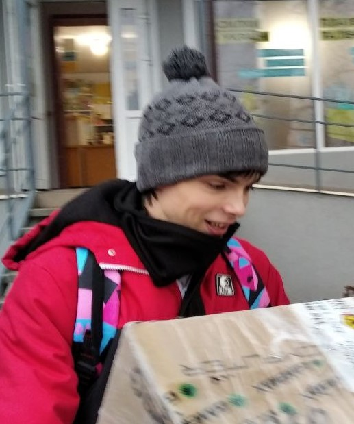

Про мене:
Я закінчив 9 класів школи №28 І-ІІІ ступенів після чого вступив до Черкаського Художньо Технічного Коледжу на спецальність 122 "Комп'ютерні науки" де добре закінчив навчання та після захисту диплома я вступив до ЧДТУ на 3й курс. В моєму дипломі описана тема графічної частини розробки гри та її анімацій.
Також протягом навчання в коледжі, я проходив курси по мові програмування Ruby де я розробив бота для Discord який до сих пір працює, його код можна знайти в моєму репозиторії в GitHub.
Для доповнення розповіді про мене: я закінчив 2 платних курси гри на гітарі де я навчився грати на гітарі.
